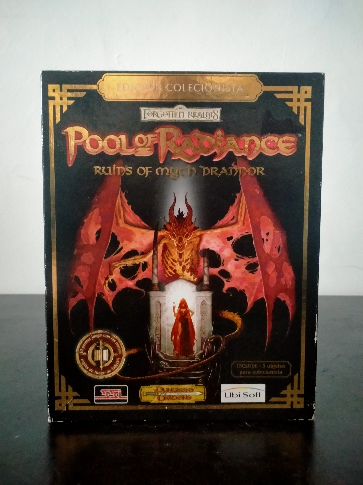

Ficha #000044
Pool of Radiance: Ruins of Myth Drannor
Pool of Radiance: Ruins of Myth Drannor es un RPG de acción ambientado en el universo Forgotten Realms de Dungeons & Dragons. Desarrollado por Stormfront Studios y publicado originalmente por SSI, el juego supuso el regreso de la histórica marca Pool of Radiance iniciada en los años ochenta, aunque reinterpretando la fórmula clásica hacia un enfoque más orientado a la acción en tiempo real y exploración de mazmorras tridimensionales. Utiliza una versión modificada del motor Dark Alliance Engine y permite controlar un grupo completo de aventureros enfrentándose a criaturas y escenarios inspirados en la ciudad élfica en ruinas de Myth Drannor. Esta edición coleccionista distribuida por Ubisoft en España incluía diversos extras físicos para coleccionistas y representa uno de los últimos títulos de SSI asociados oficialmente a la licencia clásica de Dungeons & Dragons para PC.
- Formato
- Big Box
- Plataforma
- Win95 Win98 WinMe Win2000
- Género
- Rol Action RPG Dungeon crawler Fantasia
- Serie
- Todos Big Box
- Desarrollador
- Stormfront Studios
- Distribuidor
- Ubisoft, SSI
- EAN
- —
Contenido de la edición
- CD-ROM
- Manual
- Mapa
- Caja Big Box
- Alfombrilla de ratón
Preservación
- Protección
- Verificación de CD
- Formato recomendado
- BIN/CUE
- Jugable en virtualización
- Sí
Compatible con preservación mediante imagen BIN/CUE del disco original. Puede requerir parche no-CD o ajustes de compatibilidad en sistemas modernos.